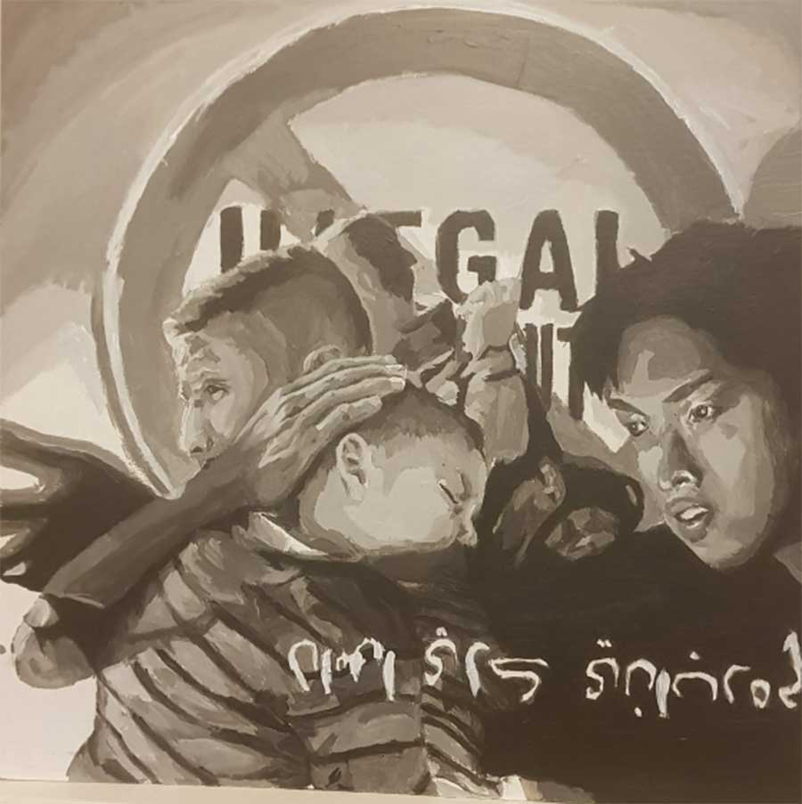

1. Sherlock Holmes Book Cover
Sherlock Holmes book is one of my interest project from Paper and Screen Class, I created and designed Art style for the Cover and Back Cover.
2. Vote Poster 2020
Posters that are intended to encourage people to vote in the upcoming election. Not take sides and must remain neutral -in my approach. To be clear I'm not to attempt to sway people one way or another - but rather encourage them to act for what they believe in - not what I believe in - by simply getting them to vote.
3. "3" Objects
Final E-Drawing Project design and hand-made by me. Includes Duel Disk made from CardBoard, 2 Styrogami Foam Cups. I drew with Illustrator
4. Greeting Card

A Good day greeting card. The Steampunk design surrounds the phrase "Having a Nice Day" made by me in Illustrator and printed and cropped to the shape using laser cut.
5. Flying Burger Drawing
Delicious hamburger with flying ingredients isolated on white background. Freshly brewed burger closeup. Drawn and colored by me, this process takes quite a while to complete (1 week.)
6. Sagmeister Found Type Posters

With 6 words from a quote 'Let The Past Make You Better' that I created, I molded and approached with different ways like "let" styled by the river rocks and it is san-serif, or "The" created by using pieces of porcelain, and metal, twigs and leaves, scrap paper
7. Black and White portrait

Using only two colors of black and white, I redrawn my portraits with propaganda paintings in the sense of stopping illegal immigration. I use a language like Aran for "Stop Immigration" at the end of the picture.
8. A wall made of rocks and stones.
This painting is drawn in a pattern of 8 inch width and 4 inch height, drawn with HB pencil, also If you look closely you will see how I brushed the rocks, using cross-hatching (horizontal and vertical cross).